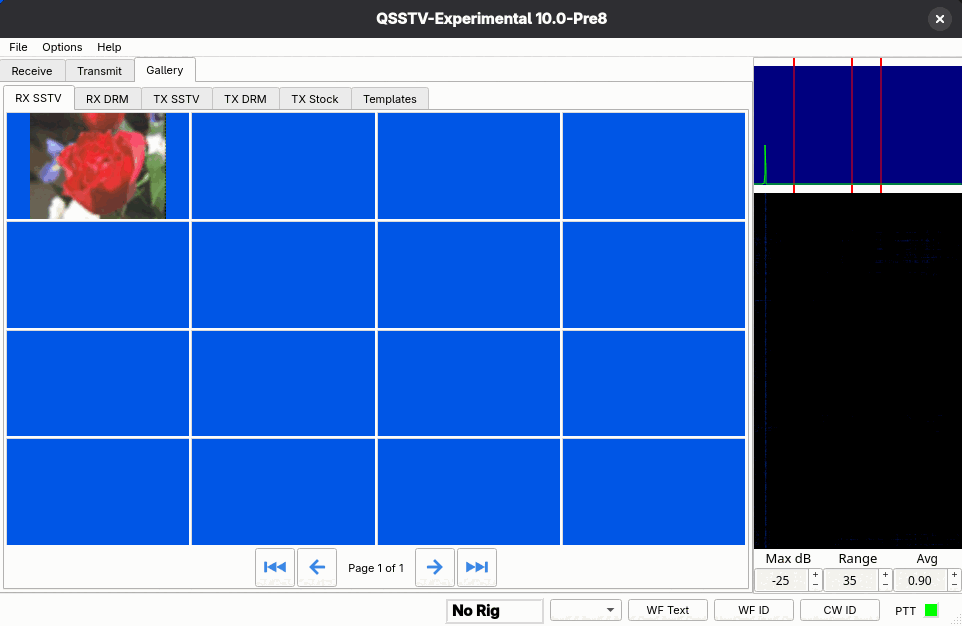
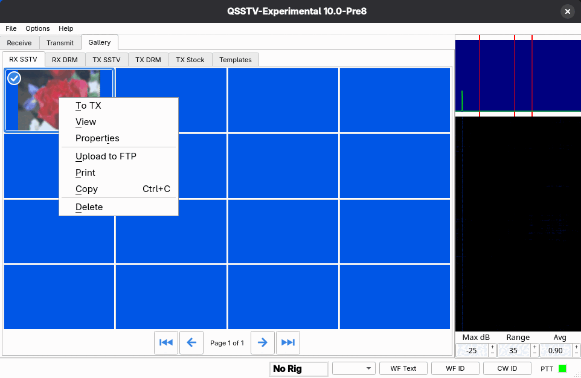

Gallery
The Gallery tab shows thumbnails of the pictures in your image directories.

Sub-tabs
| Tab | Shows |
|---|---|
| RX SSTV | Received SSTV pictures. |
| RX DRM | Received DRM pictures. |
| TX SSTV | SSTV pictures you transmitted. |
| TX DRM | DRM pictures you transmitted. |
| TX Stock | Your library of ready-to-send pictures. |
| Templates | Your TX templates. |
The folders behind these tabs are set in Configuration > Directories. The number of rows and columns of thumbnails is set in Configuration > Gui (4 x 4 by default). Use the arrow buttons under the grid to page through (first, previous, next and last page); the label shows Page n of m.
Right-click menu

The menu is arranged in groups with a line between them, the same way on every tab: first the entries that make or change a picture, then the ones that use or look at it, then the ones that send it somewhere, and Delete on its own at the bottom.
- To TX
- Loads the picture into the Transmit tab.
- View
- Opens the picture in a viewer window. Use the mouse wheel to zoom smoothly and drag to pan.
- Properties
- Shows file information about the picture.
- Upload to FTP
- Uploads the picture to the FTP server set up under FTP (received pictures).
- Copy (Ctrl+C)
- Copies the picture to the clipboard. You can paste it, or a picture copied from anywhere else, into the Transmit tab or into TX Stock.
- Delete
- Deletes the picture. By default you are asked to confirm; this can be changed in the Gui configuration page.
The menu differs a little between tabs, and the figure shows the RX SSTV tab:
- TX SSTV and TX DRM: the same without Upload to FTP.
- TX Stock starts with Edit picture (a copy is opened in your picture editor), and its third group is Load (add a picture from a file), Copy and Paste (add a picture from the clipboard).
- Templates starts with New template and Edit template, which open the template editor; its third group is Load and Copy.
The picture on the Transmit tab has its own menu in the same pattern: Load and Edit picture; View, Properties and Reset zoom/pan; Copy and Paste; and Delete, which only takes the picture out of the transmit list (the file is kept). See Editing a picture.
Selecting several pictures
Click a thumbnail to select it; selected thumbnails are tinted and show a check mark. Ctrl+click adds or removes a single thumbnail and Shift+click selects a range. With several selected, the right-click menu deletes them all or sends them all to the Transmit tab, and the Del key deletes the selected pictures. Thumbnails are listed newest first.